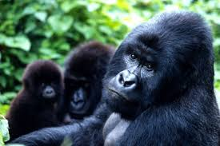

Gorilas de Montaña
 Los gorilas de montaña (Gorilla beringei beringei) viven en la República Democrática del Congo en el Parque Nacional de Virunga. Esta zona es parte del macizo de Virunga, una red de áreas protegidas que también se extiende por Uganda y Ruanda.
Amenazas
Las principales amenazas para los gorilas de montaña en la República Democrática del Congo son la deforestación, la caza furtiva y las enfermedades.